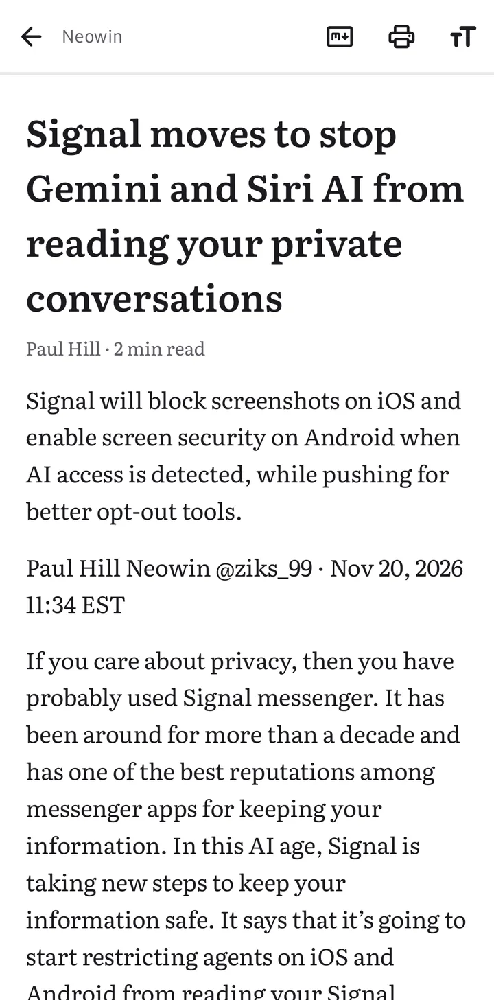
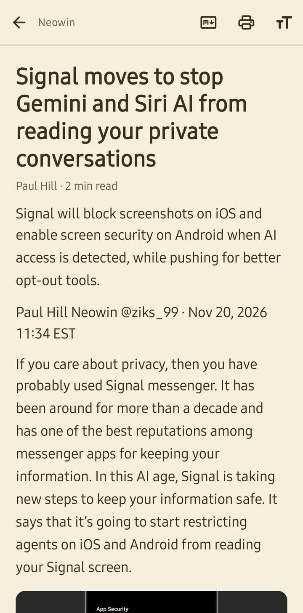
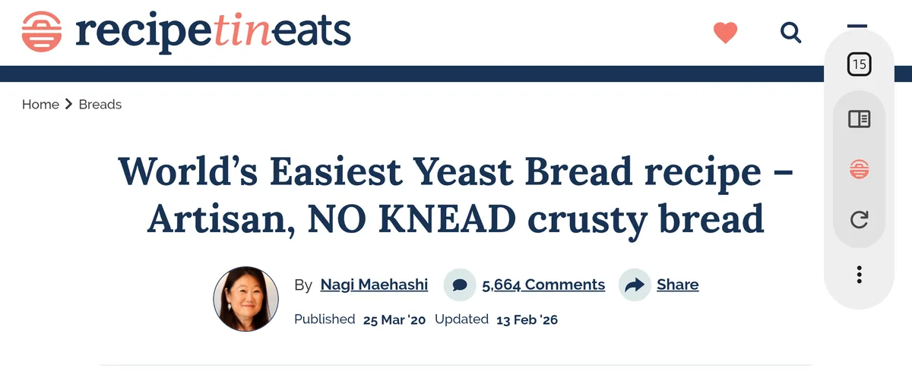
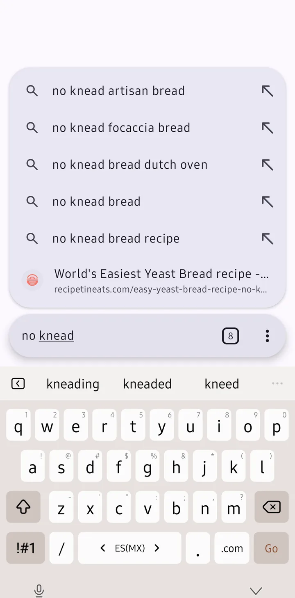
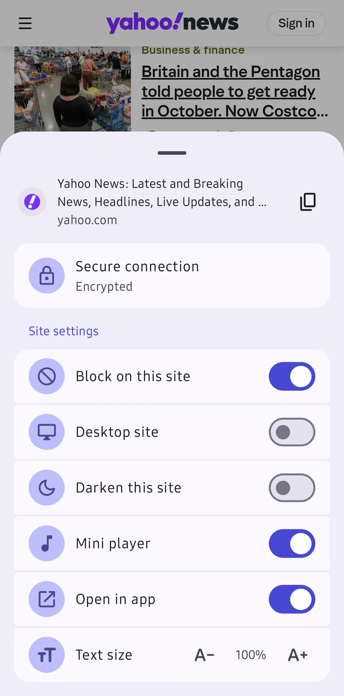
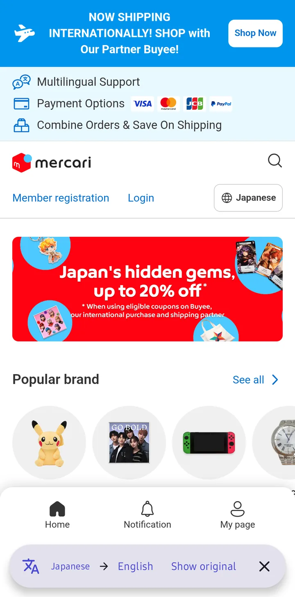
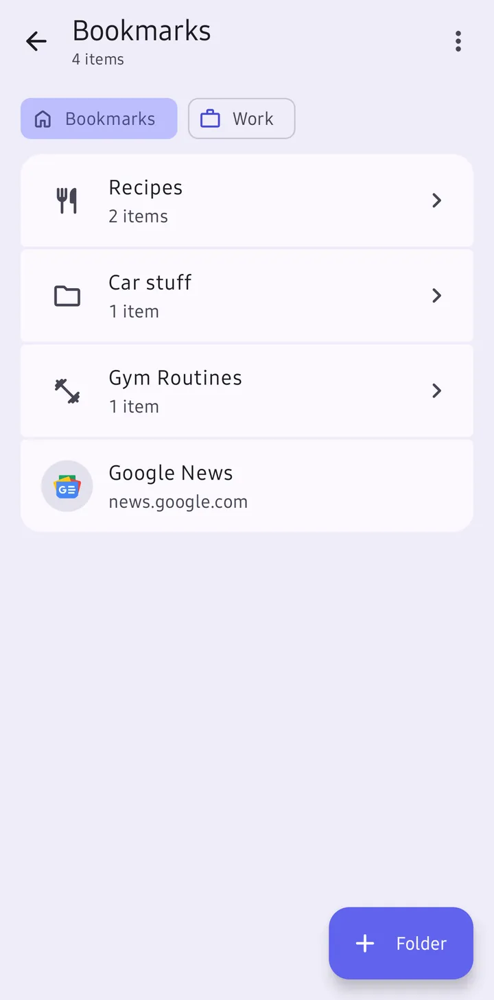
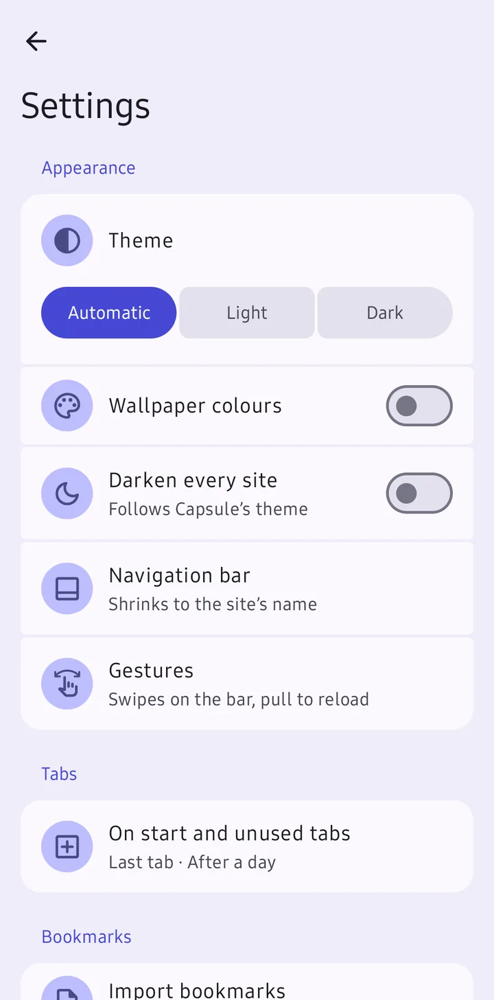

Tabs
Pull down to see them, swipe the bar to switch, flick up to close.
 Capsule for Android
Capsule for Android
A simple, private browser for Android. Ads and trackers never load, and nothing about you is collected.
Android 12 and up. In alpha on Google Play.
Blocking
They’re blocked before they reach your phone, so pages load faster.
Hide things
Open Hide things and tap whatever’s in the way. It stays hidden next time too.
Gemini Nano
Summarise a page or ask it a question. It runs on your phone, only when you ask.
Reading
Just the article, in the theme, font and size you like.


Made for Android
Pull down to see them, swipe the bar to switch, flick up to close.
Type a site’s name and search it right from the bar.
If a page has an app, its icon shows in the bar. Tap it to open the page there.

Turn your phone and the bar moves to the side.
Straight from the app





Privacy
No account, no ads, no analytics. Your history and bookmarks stay on your phone.
Join the testers group, then install it from Google Play.
Android 12 and up. Summarise and Ask need a phone with Gemini Nano.
Android System WebView, the same engine as Chrome. Google keeps it updated through Play.
Tap the address and switch off Block on this site. And let me know which site it was.
Yes. Export them from a desktop browser as an HTML file, then import it in Settings › Bookmarks.
DuckDuckGo by default. You can switch to Google, Brave, Kagi, Ecosia, Bing or Qwant.
Yes, from Settings.